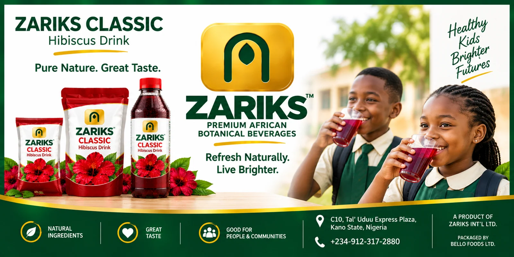
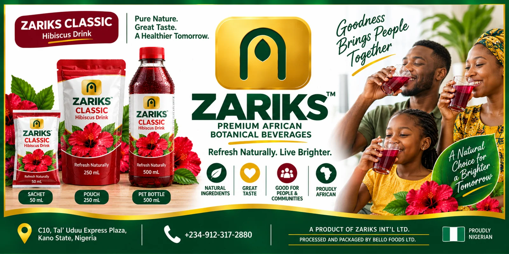
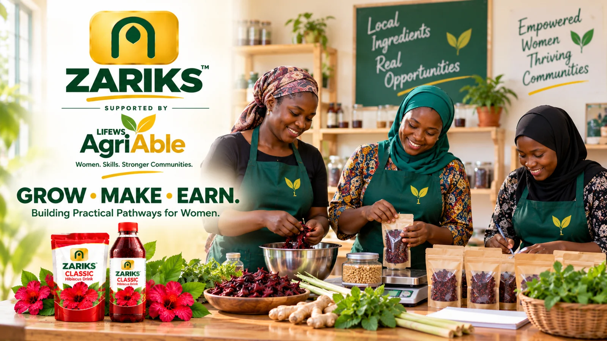
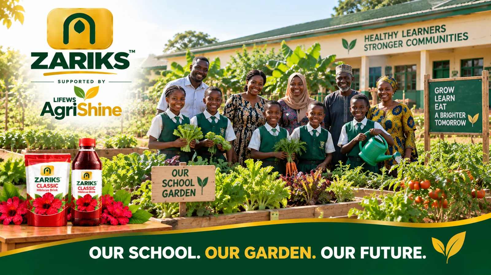
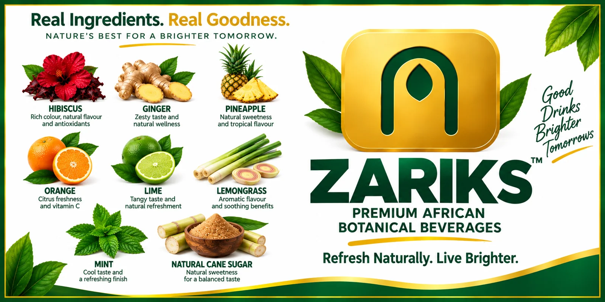
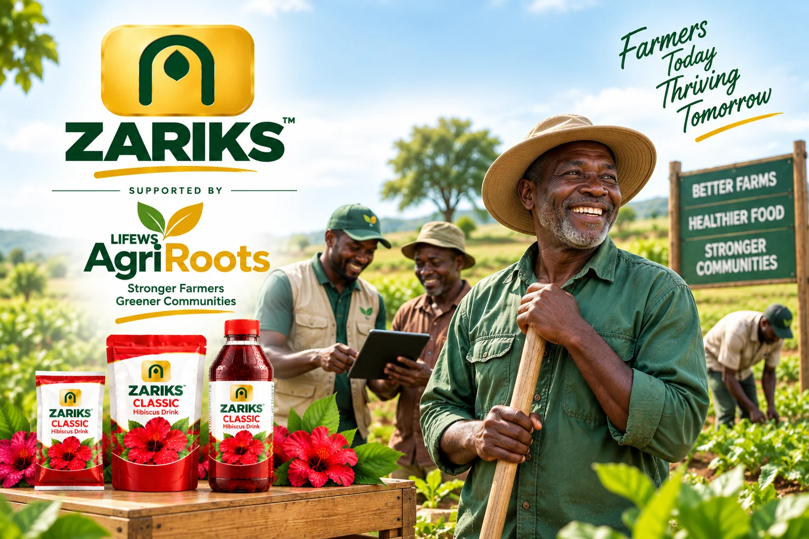
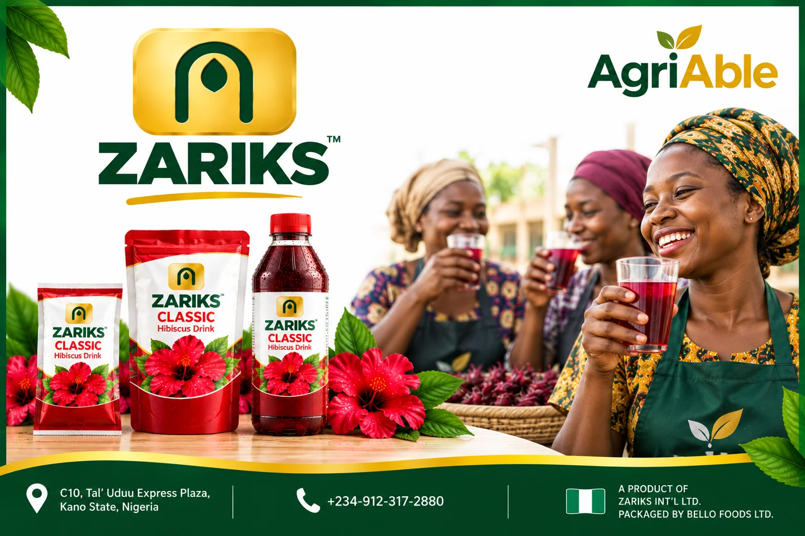

PartnerNet workspace: Detailed partner dashboard · Operational records

Premium African Botanical Beverages
Welcome to ZARIKS
Premium African botanical beverages, crafted for refreshing moments and stronger communities.
Explore ZARIKS
One brand. Many ways to connect.
Explore our products, partners, operations and community initiatives through ten connected pages.

Join the Partner Network
Explore production, distribution and community collaboration.
Explore section →




Featured beverage
ZARIKS Classic Hibiscus Drink
Discover the botanical beverage at the heart of the ZARIKS brand. View featured packaging and find out how to enquire about availability.
View beveragesRefresh Naturally. Live Brighter.
Explore the ZARIKS network and connect with our team.